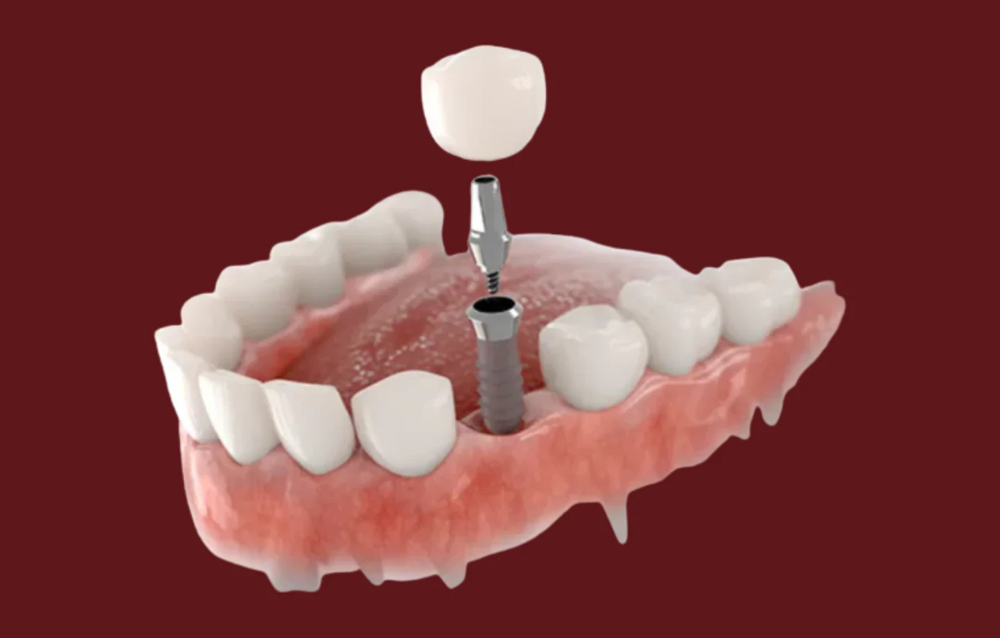
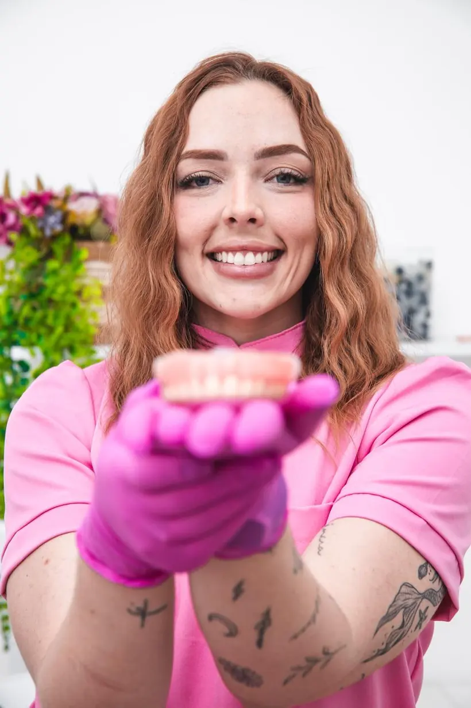
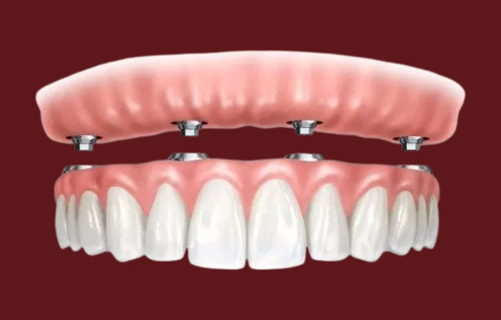
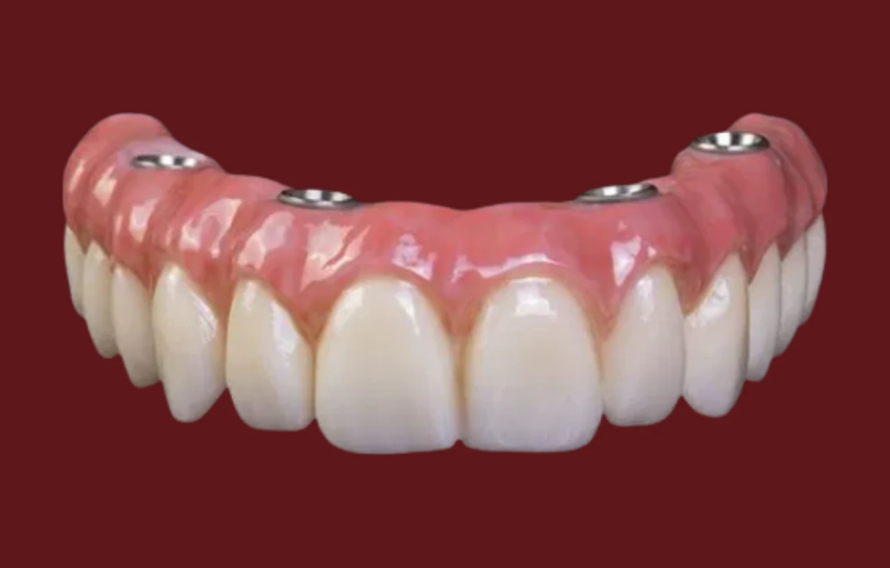
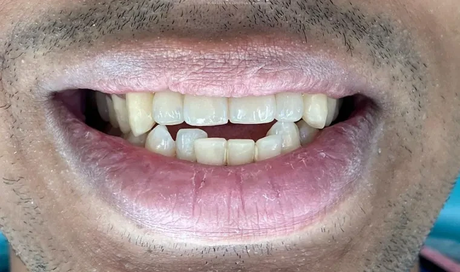
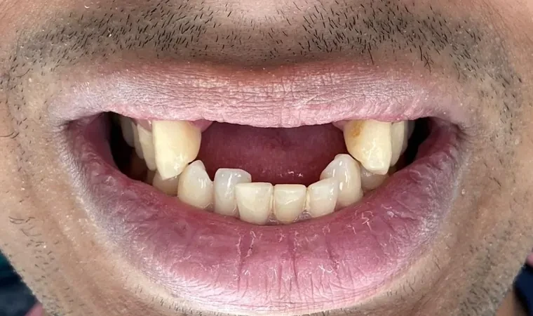

01
Implante unitário
Ideal para quem perdeu um ou poucos dentes e quer recuperar a estética, a mastigação e a confiança com uma solução fixa e duradoura.
Implantodontia · São João de Meriti, RJ
Há mais de 10 anos ajudando pacientes de São João de Meriti a recuperar a função, a estética e a confiança, com tratamentos planejados por especialistas.

Dra. Andressa Castro de QueirozImplantodontista e protesista
“Tenho vergonha de sorrir.”
“Minha dentadura solta.”
“Será que o meu caso tem solução?”
Tem. E a gente explica tudo na avaliação.Procedimentos
Implantes dentários e prótese protocolo: segurança, estética e função para voltar a sorrir e comer com confiança.

Ideal para quem perdeu um ou poucos dentes e quer recuperar a estética, a mastigação e a confiança com uma solução fixa e duradoura.

Indicada para quem perdeu todos os dentes de uma arcada e busca voltar a sorrir, falar e mastigar com mais segurança e conforto.

Em casos selecionados, é possível instalar o implante e uma prótese provisória no mesmo dia, reduzindo o tempo sem dentes.
Cuidado completo no mesmo endereço, do check-up ao tratamento especializado.
Antes e depois
Cada sorriso recuperado é uma história de superação. Casos reais da clínica; os resultados variam de pessoa para pessoa.

Depois
AntesImplantes dentários · caso da clínica
A conta que ninguém faz
Perder um dente não afeta apenas o sorriso. Sem a raiz para estimular o osso, a região sofre perda óssea ao longo do tempo, os dentes vizinhos se movimentam e o contorno do rosto muda. Quanto mais o tratamento é adiado, maiores os impactos e mais complexo o procedimento se torna.
Com implantes você pode
Como funciona
Um caminho previsível, explicado do começo ao fim antes de você decidir qualquer coisa.
Entendemos sua necessidade, examinamos a condição óssea e planejamos o tratamento ideal para o seu caso.
O implante de titânio é posicionado no osso para substituir a raiz do dente perdido, criando uma base firme e segura.
O implante se integra ao osso, formando uma base resistente para receber o novo dente com estabilidade.
Instalada a prótese definitiva, você recupera a estética, a função mastigatória e a confiança para sorrir.
Talvez seja o seu caso
Na Mais Sorrisos LR5 já ajudamos muitos pacientes a recuperar o sorriso, a autoestima e a qualidade de vida por meio dos implantes dentários. O próximo pode ser você.
Prova social
Lugar de fácil acesso, atendimento humanizado pelas profissionais, fui atendida na hora certa sem intercorrência. Dentista fez um ótimo trabalho. Preço justo.
Ótimo atendimento da equipe, principalmente da Dra. Andressa, uma ótima profissional que realizou o procedimento perfeitamente da forma que eu queria!
Atendimento top, as meninas estão de parabéns pelo carinho e a super educação. Super indico a doutora Andressa: atendimento incrível, maravilhoso.
4,6 ★ · 52 avaliações no Google

Quem vai cuidar do seu sorriso
Implantodontista e protesista
Especialista em Implantodontia e Prótese Dentária, a Dra. Andressa dedica sua atuação à reabilitação oral, ajudando pacientes a recuperarem a função, a autoestima e a qualidade de vida por meio dos implantes dentários.
Na Mais Sorrisos LR5, faz parte de uma equipe multidisciplinar que já soma mais de 10 mil atendimentos, com tratamentos planejados de forma individualizada e foco em segurança, conforto e resultados duradouros.
Dúvidas frequentes
O tratamento é realizado com anestesia e todo o cuidado necessário para proporcionar mais conforto ao paciente. A maioria relata um desconforto menor do que imaginava, comparável ao de uma extração comum.
Não. O período de cicatrização faz parte do processo para garantir que o implante fique firme e seguro. Enquanto isso, você já está no caminho para recuperar um sorriso estável e funcional, sem ficar sem dentes durante o percurso.
Mas quanto custa continuar sem comer o que gosta? Sem sorrir nas fotos? Sem a confiança de antes? O implante é um investimento em saúde, autoestima e qualidade de vida, e a Mais Sorrisos LR5 tem condições de pagamento para ajudar você a dar esse primeiro passo.
Agende em 30 segundos
Escolha o tratamento, o dia e o horário. Sua mensagem chega completa para a nossa recepção, que confirma a disponibilidade com você.
Onde estamos
Rua Luiz Alves Cavalcante, 689, loja C
Vilar dos Teles, São João de Meriti – RJ · CEP 25561-140
Rua da feira, em frente à Toca dos Bichos
Fale com a recepção
WhatsApp (21) 99904-5762Atendimento com hora marcada. A recepção confirma o dia e o horário escolhidos no agendamento.